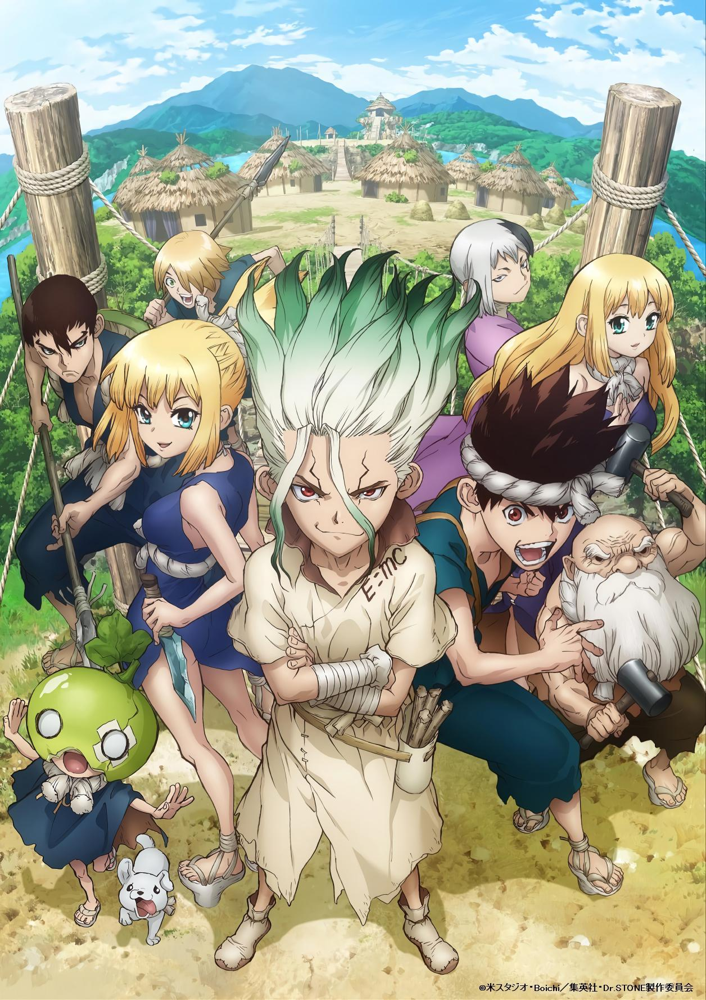
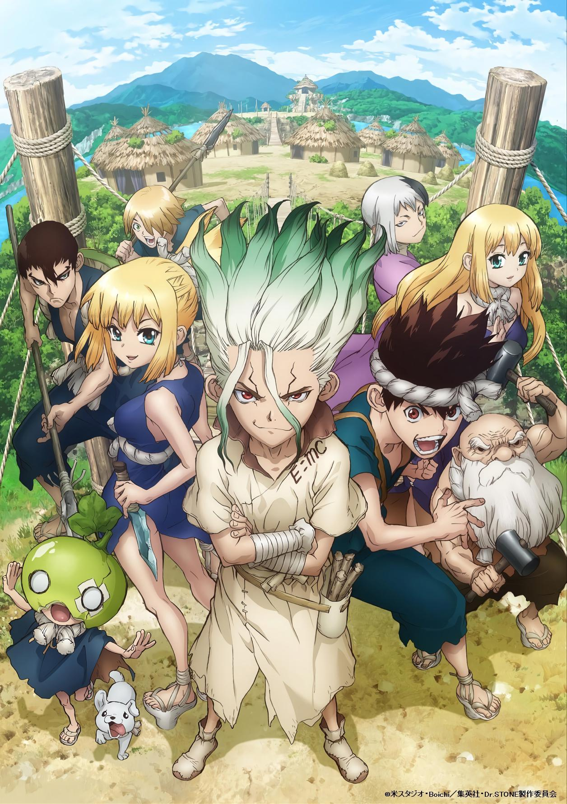

Interesses
Hij kijkt graag anime, zoals Dr.Stone en Naruto en en zit elke dag een paar uurtjes op TikTok. Zijn favoriete eten is sushi met gefrituurde garnaal en ook andere soorten vis, zoals gebakken zalm.
Hij kijkt graag anime, zoals Dr.Stone en Naruto en en zit elke dag een paar uurtjes op TikTok. Zijn favoriete eten is sushi met gefrituurde garnaal en ook andere soorten vis, zoals gebakken zalm.

 
